This guide is for tour participants only.
Please enter the password to continue.
Password provided by your tour leader
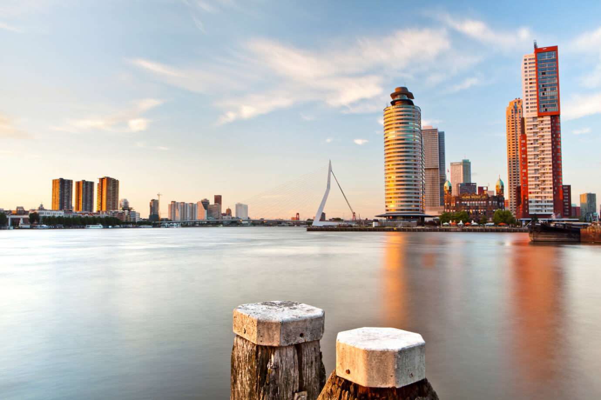
An academic journey through Rotterdam, Tilburg, and Leiden — connecting with leading European psychology institutions and experiencing Dutch culture first-hand.
Trip at a Glance
All essential travel information for the group — flights, accommodation, and coach arrangements — is summarised below for easy reference.
Cathay Pacific CX271
15 May (Fri) — Depart HKG at 23:15
16 May (Sat) — Arrive AMS at 06:55
Economy class · 1 × 23 kg baggage
Cathay Pacific CX270
22 May (Fri) — Depart AMS at 12:20
23 May (Sat) — Arrive HKG at 06:10
Economy class · 1 × 23 kg baggage
Holiday Inn Express Rotterdam – Central Station (IHG)
Weena 121, 3013 CK Rotterdam
Check-in: 16 May · Check-out: 22 May
Breakfast included (from 06:30 to 10:00 on weekdays and 07:00 to 10:30 on weekends)
20-seater coach
16 May — Airport → Hotel (one-way)
18 May — Full-day service (Tilburg)
19 May — Full-day service (Leiden)
20 & 21 May — No coach service
22 May — Hotel → Airport (one-way)
Day-by-Day Schedule
Times marked ~ are estimates; times marked TBC are pending final confirmation.
| Day | Date | Time | Location | Activity | Transport |
|---|---|---|---|---|---|
| Day 0 | 15 May (Fri) | 20:00 23:15 |
Hong Kong |
20:00 — Gather at HKG Terminal 1, Aisle C 23:15 — Departure, Flight CX271 |
Cathay Pacific CX271 |
| Day 1 | 16 May (Sat) | 06:55 ~08:00 ~09:00 ~10:00 ~10:15 ~11:00 ~11:45 ~12:15 ~13:15 ~14:30 |
Amsterdam → Rotterdam |
06:55 — Arrive Amsterdam Schiphol (AMS) ~08:00 — Coach departs for Rotterdam (~1 hr) ~09:00 — Hotel check-in / luggage check & freshen up ~10:00 — Walk to Schouwburgplein (~10 min) ~10:15 — Ice-breaking activities at Schouwburgplein — group games, introductions, tour briefing & group photo ~11:00 — Witte de Withstraat (~5 min walk) — street art, cafés & cultural stroll ~11:45 — Museum Boijmans Van Beuningen Depot (~5 min walk) — exterior visit (free) · Optional paid entry: €20/person ~12:15 — Lunch near Museumpark ~13:15 — Metro to Delfshaven (~10 min, Line B/C) — historic harbour, windmill & Pilgrim Fathers site ~14:30 — Return to hotel by metro; free time & rest |
20-seater coach (airport → hotel, ~1 hr) Metro to/from Delfshaven: €4.50/person (2-hr unlimited ticket, pay by contactless card) |
| Day 2 | 17 May (Sun) | 10:00 ~10:15 ~11:00 ~15:00 ~16:00 ~16:30 ~17:00 |
Rotterdam & Kinderdijk |
10:00 — Meet at Rotterdam Central Station; short rest (~15 min) ~10:15 — Depart for Kinderdijk (water shuttle) ~11:00 — Kinderdijk Windmills (UNESCO) — sightseeing, walking & lunch (~4 hrs incl. transport) ~15:00 — Rotterdam Architecture Walking Tour — Erasmus Bridge & modern skyline (~60 min) ~16:00 — Cube Houses (Kubuswoningen) — photo stop & optional visit (~30 min) ~16:30 — Markthal Rotterdam — free exploration (~30 min) ~17:00 — Dinner (~60 min) |
Water shuttle to Kinderdijk Water bus fare: €4.60–€5.50/person (OVpay contactless) Walking for city tour |
| Day 3 | 18 May (Mon) | 10:00 11:00 11:15 11:45 12:00 13:15 14:00 14:45 ~16:00 ~17:00 |
Tilburg |
10:00 — Depart hotel (coach, ~1 hr) 11:00 — Arrival at Tilburg University 11:15–11:45 — Introduction by Dr. Michael Bender 11:45–12:00 — Introduction by Dr. Christine Fong 12:00–13:15 — Lunch 13:15–14:00 — Meeting with Complex (psychology study association) 14:00–14:45 — Meeting with Stimulus (student political party) 14:45–16:00 — Campus tour ~16:00 — Depart for Rotterdam (coach, ~1 hr) ~17:00 — Arrive back at hotel |
Full-day coach (~1 hr each way) |
| Day 4 | 19 May (Tue) | 11:00 ~12:00 13:00 13:45 14:30 15:15 16:00 ~17:00 |
Leiden |
11:00 — Depart hotel (coach, ~35–45 min) ~12:00 — Arrive Leiden; free time before programme 13:00 — Welcome by International Relations Office 13:45 — Campus tour (Academy Building, Rapenburg 73) 14:30 — Psychology session (Agora Building) 15:15 — Workshop with graduate students 16:00 — Wrap-up & depart for Rotterdam (coach, ~35–45 min) ~17:00 — Arrive back at hotel |
Full-day coach (~35–45 min each way) |
| Day 5 | 20 May (Wed) | 09:15 10:00 TBC |
Rotterdam |
09:15 — Depart hotel 10:00 — Visit ESSB, Erasmus University Rotterdam Presentations · Campus tour · Meet & greet · Alumni sharing (Ms. Tereza Stancheva) TBC — End time & venue within ESSB to be confirmed |
Walk / public transport (no coach) Metro to ESSB: €4.50/person (2-hr unlimited ticket, pay by contactless card) |
| Day 6 | 21 May (Thu) | 09:45 10:00 12:00 |
Rotterdam |
09:45 — Depart hotel (~2-min walk) 10:00–12:00 — Visit Neurobics (Weena 200 Building, Weena 290) — QEEG & brainmapping session Host: Roland Verment |
~2-min walk from hotel (no coach) |
| Day 7 | 22 May (Fri) | 08:30 ~09:30 12:20 |
Rotterdam → Amsterdam |
08:30 — Hotel check-out; coach departs for Schiphol ~09:30 — Arrive Amsterdam Schiphol (AMS) 12:20 — Departure, Flight CX270 |
20-seater coach (one-way, hotel → airport, ~1 hr) |
| Day 8 | 23 May (Sat) | 06:10 | Hong Kong | 06:10 — Arrive HKG | — |
Home Base
Rotterdam is the second-largest city in the Netherlands and home to Europe's largest port. Unlike the canal-lined streets of Amsterdam, Rotterdam was almost entirely rebuilt after the Second World War, giving it a bold, contemporary skyline filled with innovative architecture. The city is a living laboratory of modern design, with landmarks such as the tilted Cube Houses (Kubuswoningen), the soaring Erasmus Bridge, and the spectacular Markthal — a horseshoe-shaped market hall with a vivid ceiling mural.
Rotterdam's creative energy extends to its food scene, museums, and waterfront. The Museum Boijmans Van Beuningen holds one of the finest art collections in Europe, while the SS Rotterdam — a restored ocean liner — now serves as a floating hotel and museum. The city is also a hub for psychology and social science research, home to Erasmus University Rotterdam, one of Europe's leading research institutions.
Our hotel, the Holiday Inn Express Rotterdam – Central Station (Weena 121), is ideally located in the heart of the city, within walking distance of Rotterdam Centraal station and many of the city's key attractions.
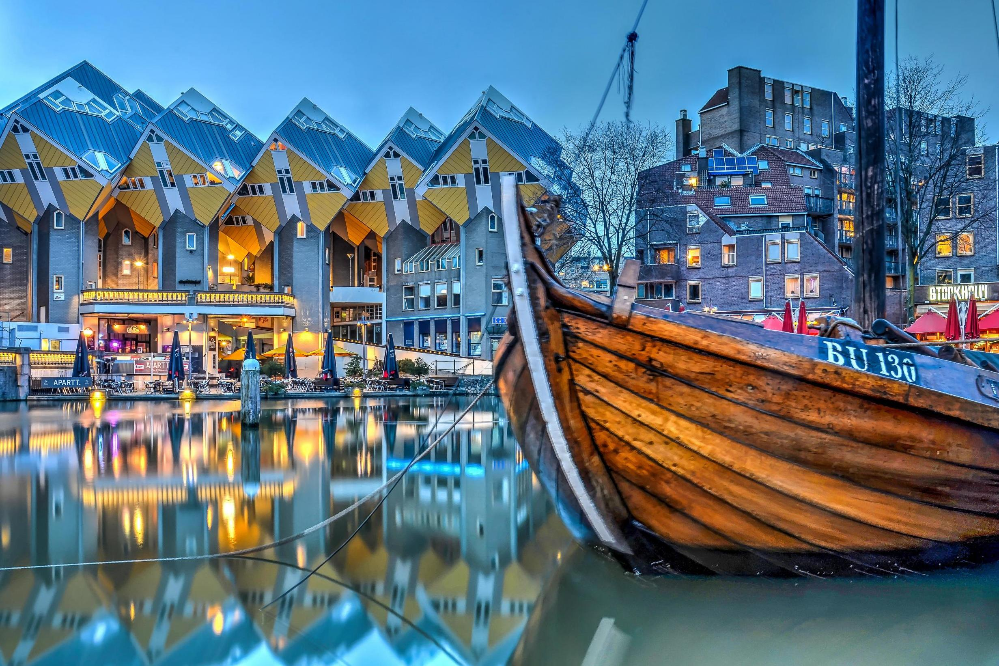
Day 1 — 16 May (Saturday)
After arriving from Hong Kong, the group will spend the afternoon exploring some of Rotterdam's most distinctive cultural and historic spots — all within easy reach of the hotel.
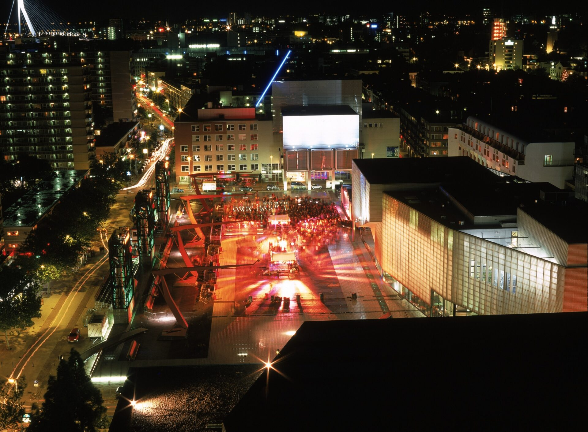
Schouwburgplein is one of Rotterdam's most iconic public squares, located in the heart of the city just a short walk from the hotel. Designed by the landscape architecture firm West 8, the square is celebrated for its bold, minimalist design — a vast open deck elevated above street level, flanked by the Luxor Theatre and the Pathé cinema complex.
The square's most distinctive features are its four large hydraulic light towers, which visitors can operate by inserting a coin and turning a handle, raising or lowering the lamp heads. This interactive element makes Schouwburgplein a natural setting for our ice-breaking activities — a memorable first shared experience as a group in the Netherlands.
📍 Address: Schouwburgplein, 3012 CL Rotterdam
🚶 Transport: ~10-minute walk from the hotel
💶 Cost: Free (public square)
Witte de Withstraat is widely regarded as Rotterdam's most vibrant cultural street. Named after the 17th-century Dutch naval commander Witte de With, the street stretches through the city's arts quarter and is lined with independent galleries, design studios, trendy cafés, and some of the city's best street art murals.
The street is home to several important cultural institutions, including the Witte de With Center for Contemporary Art (now known as Kunstinstituut Melly). It is a favourite gathering spot for Rotterdam's creative community and international visitors alike. Walking along Witte de Withstraat offers a vivid contrast to the corporate architecture of the city centre — a glimpse into Rotterdam's grassroots cultural identity.
📍 Address: Witte de Withstraat, Rotterdam
🚶 Transport: ~5-minute walk from Schouwburgplein
💶 Cost: Free (street exploration)
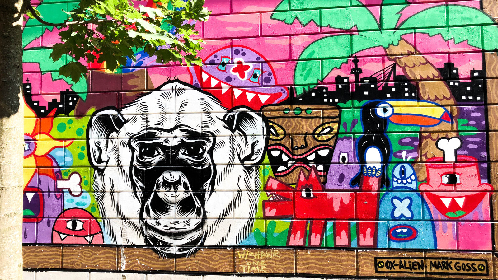
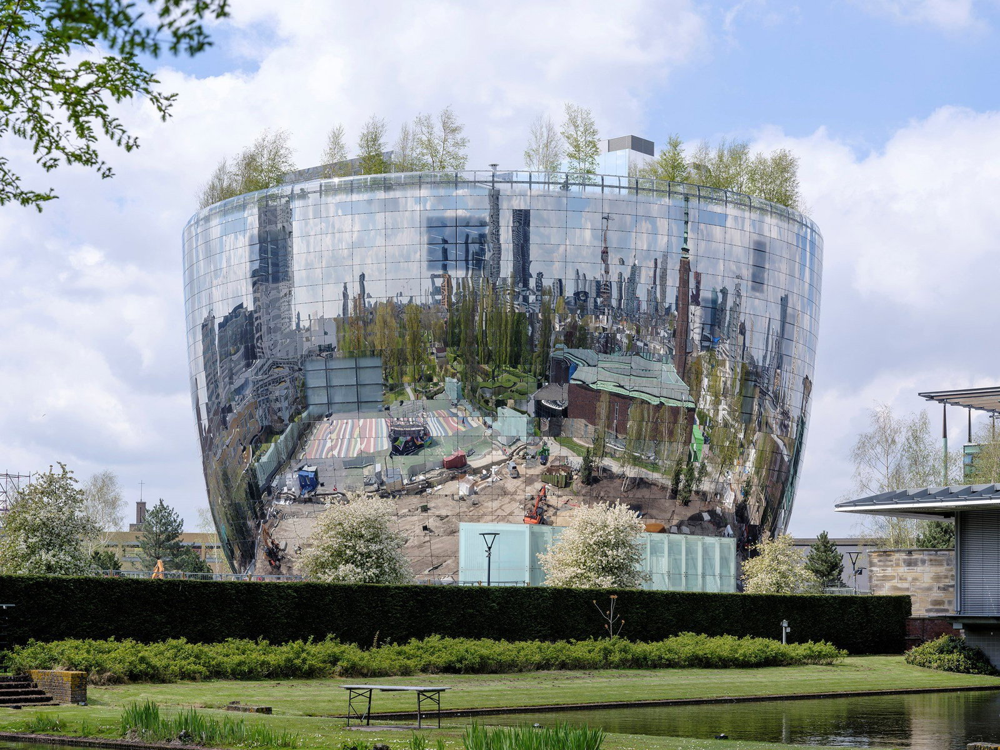
The Depot Boijmans Van Beuningen is the world's first publicly accessible art storage facility, opened in Rotterdam in 2021. Most museums keep 85–90% of their collections hidden in warehouses; the Depot inverts this entirely — placing the entire storage facility on display, allowing visitors to walk through climate-controlled rooms and see over 151,000 artworks up close, including works by Rembrandt, Van Gogh, Salvador Dalí, and Hieronymus Bosch.
The building itself is a landmark: a striking mirrored bowl-shaped structure that reflects the surrounding Museumpark and skyline. The rooftop features a garden with panoramic views over the city. Even an exterior visit — which is free — is a memorable architectural experience.
📍 Address: Museumpark 24, 3015 CX Rotterdam
🚶 Transport: ~5-minute walk from Witte de Withstraat
💶 Cost: Exterior visit free · Paid entry: €20/person (no confirmed student discount for international students)
Delfshaven is the only neighbourhood in Rotterdam to have survived the devastating bombing of 1940 largely intact, making it a rare window into the city's pre-war character. Its cobblestone streets, 17th-century canal houses, and traditional Dutch windmill stand in striking contrast to the modern skyline visible just across the water.
Delfshaven holds a special place in history as the departure point of the Pilgrim Fathers in 1620, who set sail from here on the Speedwell before eventually crossing the Atlantic on the Mayflower. The Pelgrimvaderskerk (Pilgrim Fathers' Church) still stands on the waterfront and is open to visitors. The neighbourhood is also home to artisan breweries, antique shops, and charming waterside cafés.
📍 Address: Delfshaven, Rotterdam (nearest metro: Delfshaven, Line B/C)
🚇 Transport: ~10-minute metro ride from Rotterdam Centraal (Line B or C)
💶 Cost: Free to explore · Metro fare: €4.50/person (2-hr unlimited, pay by contactless card)
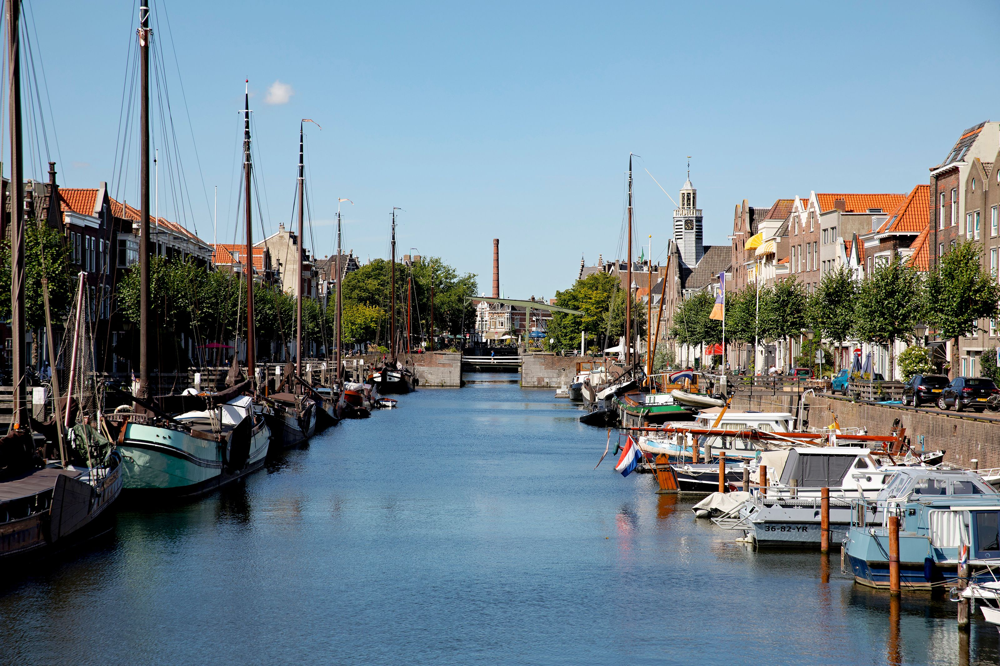
Day 2 — 17 May (Sunday)
A full day of cultural exploration — from a UNESCO World Heritage windmill site to Rotterdam's most iconic architectural landmarks.
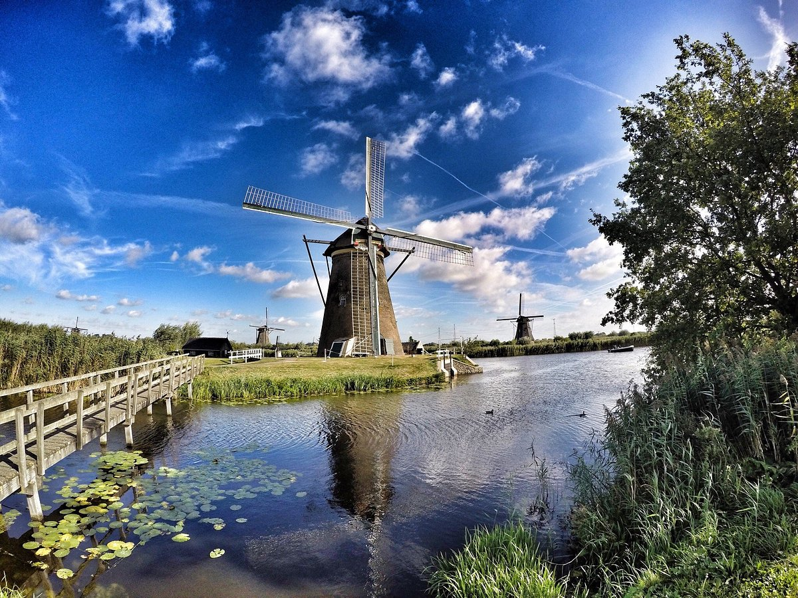
Kinderdijk is one of the most iconic and visited sites in the Netherlands, and a UNESCO World Heritage Site since 1997. Located about 15 kilometres east of Rotterdam, the site features 19 historic windmills built around 1740 as part of a sophisticated water management system designed to drain the low-lying polder land.
The windmills at Kinderdijk are a powerful symbol of Dutch ingenuity in the face of nature — the Netherlands has long battled to reclaim and protect land from the sea, and Kinderdijk represents one of the finest surviving examples of this centuries-old engineering tradition. Visitors can walk along the dikes between the windmills, explore the interior of one of the mills, and take in the sweeping views of the Dutch landscape.
The group will travel to Kinderdijk by water shuttle from Rotterdam, adding a scenic river journey to the experience.
📍 Address: Nederwaard 1, 2961 AS Kinderdijk
🚢 Transport: Water shuttle from Rotterdam (~30 min)
💶 Water shuttle fare: €4.60–€5.50/person (OVpay contactless)
🎟️ Site entry: €16/person (adults) · Booking in advance recommended in May
The Cube Houses are one of Rotterdam's most recognisable landmarks — a cluster of 38 innovative residential units designed by architect Piet Blom and completed in 1984. Each cube is tilted 45 degrees and rests on a hexagonal pylon, creating a forest-like canopy of angular yellow-grey structures above the Blaak street level.
Blom's concept was to design a "village within a city" — each cube representing a tree, with the whole cluster forming an urban forest. The interior of a cube is divided across three floors, with the tilted walls creating unconventional triangular rooms. One of the cubes, the Kijk-Kubus (Show Cube), is open to the public as a small museum, offering a fascinating look at life inside this architectural experiment.
📍 Address: Overblaak 70, 3011 MH Rotterdam
🚶 Transport: Walking distance from Markthal
💶 Cost: Exterior free · Show Cube entry: ~€3.50/person
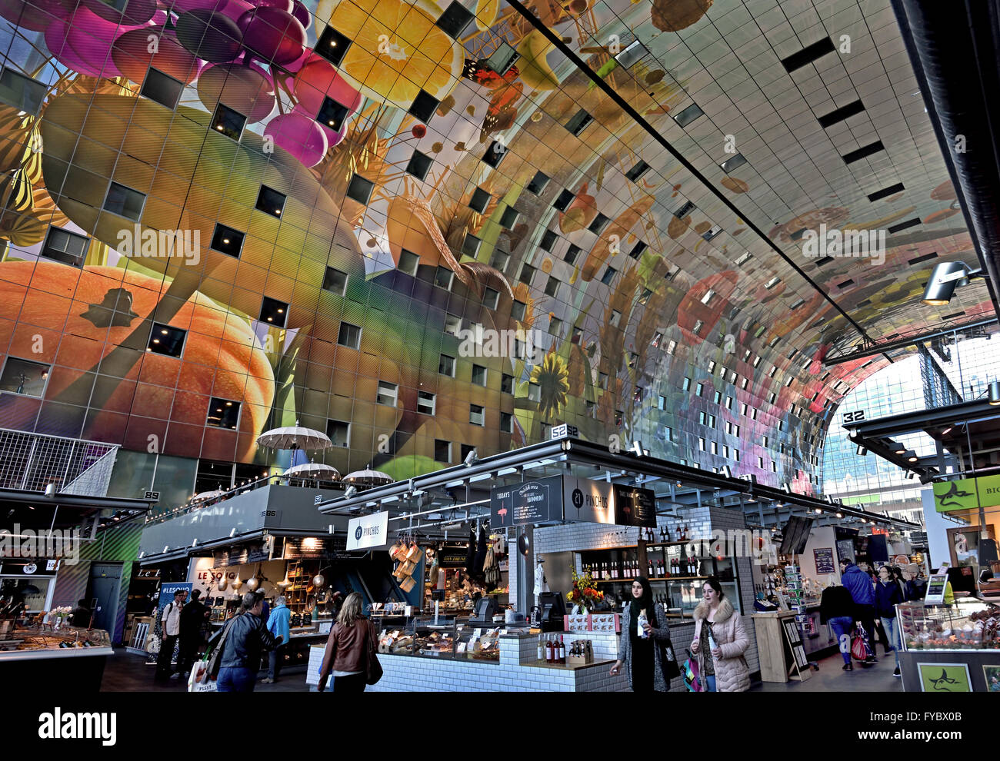
The Markthal is one of Rotterdam's most spectacular modern buildings — a horseshoe-shaped arch of apartments enclosing a vast indoor market hall, designed by the Dutch architecture firm MVRDV and opened in 2014. It was the first covered market hall in the Netherlands and quickly became one of the country's most visited buildings.
The interior ceiling of the Markthal is covered by a massive artwork called Horn of Plenty — a 11,000 square metre mural by artists Arno Coenen and Iris Roskam, depicting oversized fruits, vegetables, flowers, and insects in vivid colour. The market floor below houses over 100 fresh food stalls and restaurants, offering everything from Dutch cheese and stroopwafels to international cuisine.
The Markthal is an ideal spot for a free exploration break — students can browse the stalls, try local snacks, or simply admire the architecture.
📍 Address: Dominee Jan Scharpstraat 298, 3011 GZ Rotterdam
🚶 Transport: Walking distance from Cube Houses
💶 Cost: Free entry · Food at own expense
Day 3 — 18 May (Monday)
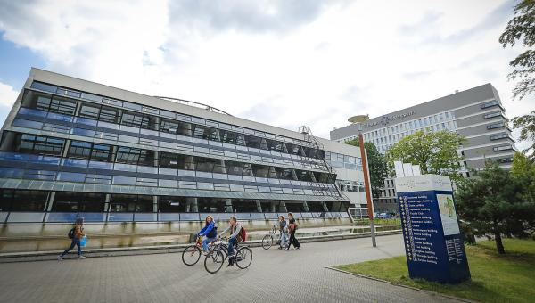
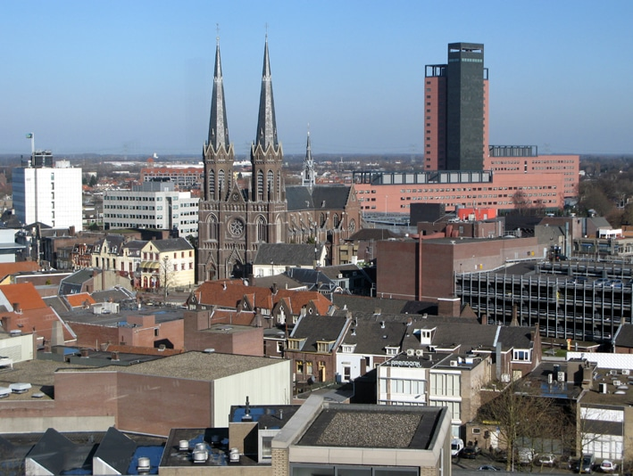
Founded in 1927, Tilburg University is a specialised university in the Netherlands with a strong focus on the social sciences, humanities, law, economics, and business. It is consistently ranked among the top universities in the Netherlands and is internationally recognised for its research output and student-centred teaching approach.
The Tilburg School of Social and Behavioral Sciences is one of the university's flagship faculties. It houses departments covering psychology, sociology, human resource studies, and methodology and statistics. The school is known for its interdisciplinary approach, connecting psychological theory with real-world social challenges. Research groups within the school address topics ranging from clinical and health psychology to work and organisational behaviour.
Our visit will include a guided campus tour as well as a meeting session with local professors and students — offering a valuable opportunity to exchange ideas and learn about the Dutch higher education experience in psychology.
📍 Address: Warandelaan 2, 5037 AB Tilburg
🕘 Depart Hotel: ~09:00 · Arrive: ~10:00
👤 Host: Dr. Christine Fong
🚌 Transport: Full-day coach (~1 hr drive from Rotterdam)
Day 4 — 19 May (Tuesday)
Established in 1575, Leiden University is the oldest university in the Netherlands and one of the most prestigious research universities in Europe. It has a distinguished history of intellectual achievement — alumni and faculty include René Descartes, Albert Einstein (who held a visiting professorship), and twelve Nobel Prize laureates. The university is deeply embedded in the historic fabric of the city of Leiden, with its buildings spread across the charming canal-lined streets.
The Academy Building (Academiegebouw) at Rapenburg 73 is the ceremonial heart of the university, dating back to the 16th century. It sits along the Rapenburg canal, one of the most photographed streets in the Netherlands. The Institute of Psychology at Leiden is internationally recognised for its research in areas including clinical psychology, developmental psychology, cognitive neuroscience, and health psychology.
Leiden itself is a beautiful Dutch city with over 35 kilometres of canals, historic windmills, and a vibrant student culture. Walking through its streets is like stepping back into the Dutch Golden Age.
📍 Academy Building: Rapenburg 73, Leiden
📍 Agora Building: Faculty of Social & Behavioural Sciences
👤 Contact: Hungwah Lam, Head of International Relations
🚌 Transport: Full-day coach (~35–45 min each way)
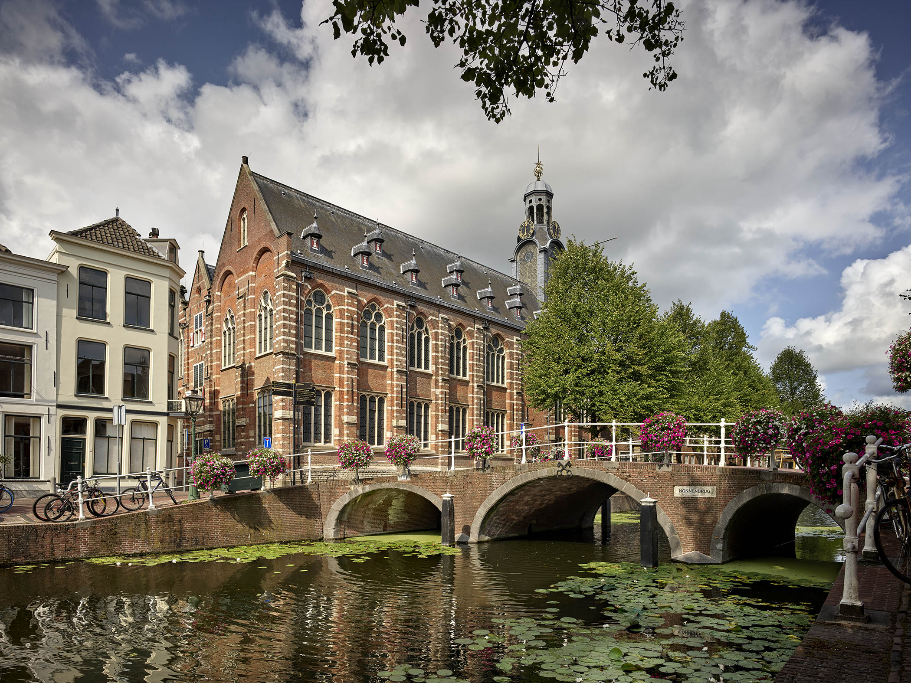
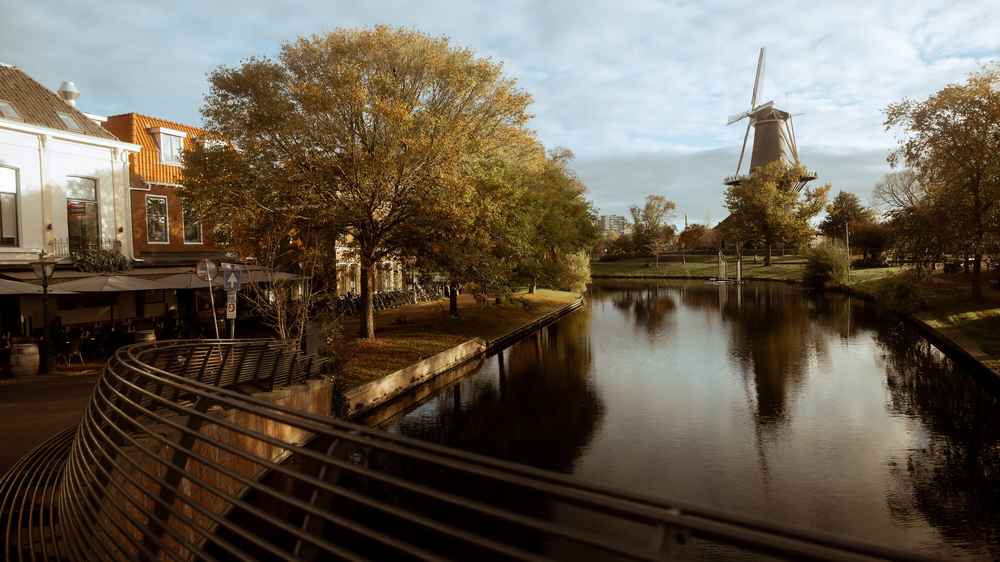
The following programme has been arranged by the International Relations Office and the Institute of Psychology at Leiden University.
Day 5 — 20 May (Wednesday)
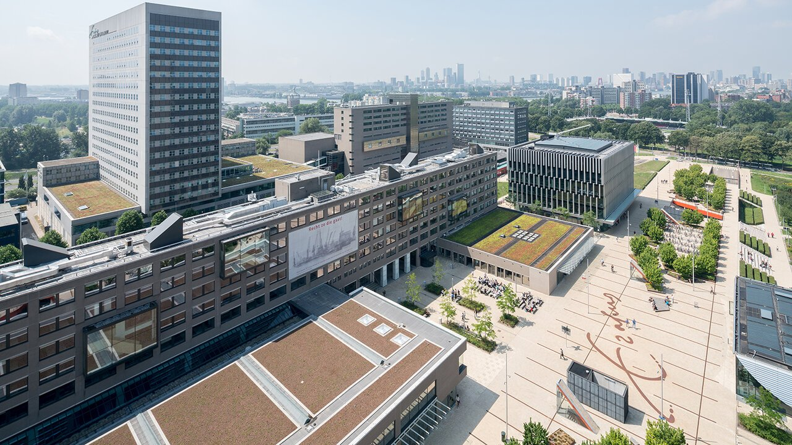
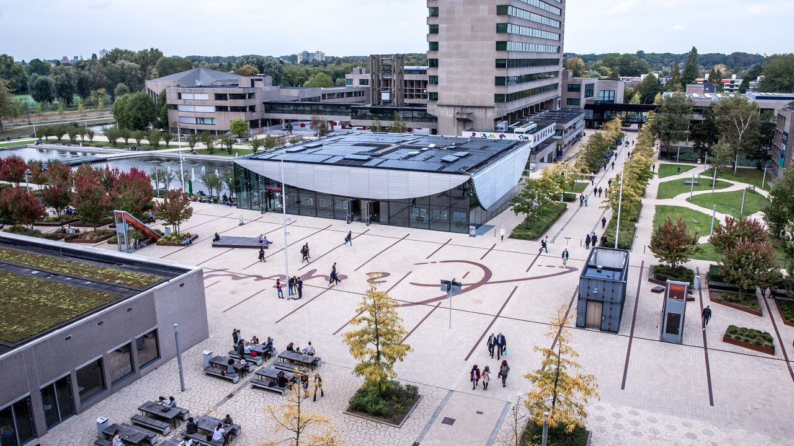
Erasmus University Rotterdam (EUR) was founded in 1913 and is one of the most internationally oriented research universities in Europe. Named after the great Renaissance humanist Desiderius Erasmus of Rotterdam, the university has a particular strength in economics, management, medicine, and the social sciences. It consistently ranks among the top 200 universities in the world.
The Erasmus School of Social and Behavioural Sciences (ESSB) is housed in the iconic Mandeville Building on the Woudestein campus. ESSB brings together researchers and students from psychology, pedagogy, public administration, and sociology. The school is internationally recognised for its research in work and organisational psychology, clinical psychology, and social psychology. It offers a broad range of Bachelor's, Master's, and PhD programmes, many of which are taught in English.
Our visit will be hosted by Oliwia Dysko (Exchange & Bachelor Admissions Officer). The visit will include presentations, a campus tour, a meet & greet with local students, and a special sharing session by Ms. Tereza Stancheva, a current Master's student in Clinical Psychology at ESSB and a former exchange student at CityUHK.
📍 Address: Mandeville Building, Burgemeester Oudlaan 50, 3062 PA Rotterdam
🕙 Visit starts: 10:00
👤 Host: Oliwia Dysko
📧 Contact: exchange@essb.eur.nl
🚌 Transport: Public transport or walking (no coach on this day)
Day 6 — 21 May (Thursday)
Neurobics is a Rotterdam-based neurofeedback clinic with over 15 years of experience in applied neuroscience. The organisation specialises in measuring and training brain activity using EEG (Electroencephalography) technology, with a focus on improving cognitive performance, emotional regulation, and mental well-being.
A core part of their practice is Quantitative EEG (QEEG) — also known as brainmapping — which uses computer-based analysis to compare an individual's brainwave patterns against normative databases. This allows practitioners to identify areas of dysregulation and design personalised neurofeedback training programmes. QEEG has been studied as a complementary approach in conditions such as ADHD, anxiety, and sleep disorders.
This visit offers students a rare opportunity to see how neuroscience is applied in a real-world clinical and research setting, bridging the gap between academic psychology and professional practice. Students are encouraged to think critically about the evidence base for neurofeedback and to engage with the practitioners directly.
Note: As a private, profit-making organisation, students are reminded to approach the visit with a critical and enquiring mindset. The visit is intended for educational exposure to applied neuroscience technologies, not as an endorsement of any commercial service.
📍 Address: Weena 290, 3012 NJ Rotterdam (Weena 200 Building)
🚶 Transport: ~2-minute walk from the Holiday Inn Express (Weena 121)
🕐 Time: 10:00 – 12:00
🌐 Website: www.neurobics.nl
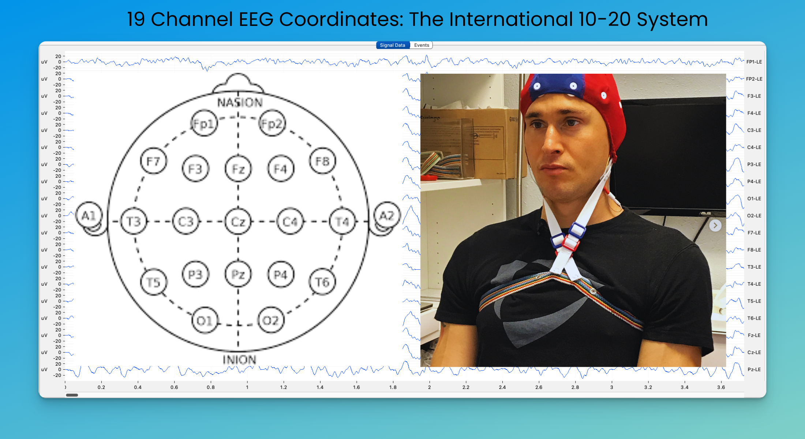
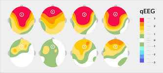
Quantitative EEG (QEEG) analyses brainwave activity by comparing an individual's EEG data against a normative database. It maps patterns of electrical activity across different brain regions, helping clinicians identify areas of over- or under-activation that may be associated with cognitive or emotional difficulties.
Practical Information
A few practical pointers to help you make the most of your time in the Netherlands.
May is a lovely time to visit — expect mild temperatures of 14–19°C with occasional showers. Pack a light waterproof jacket and comfortable walking shoes.
The Netherlands uses the Euro (€). Most places accept card payments (Maestro/Visa/Mastercard). ATMs are widely available near the hotel and at Schiphol Airport.
The Netherlands is famously cycle-friendly. In Rotterdam and Leiden, many attractions are walkable from the city centre. Be mindful of dedicated cycle lanes on pavements.
EU roaming rules apply for most HK SIM cards. Free Wi-Fi is available at the hotel and most cafés. Download Google Maps offline for Rotterdam, Tilburg, and Leiden before departure.
Try Dutch classics such as stroopwafels, bitterballen, and Dutch cheese. Rotterdam's Markthal is a great spot for a quick lunch. Breakfast is included at the hotel each morning.
Emergency services: 112 (EU standard). Non-emergency police: 0900-8844. Please refer to the information provided by your tour leader for group contact details. Staff contact: Gilbert Lau (details to be provided separately).
Dutch is the official language, but English is very widely spoken throughout the Netherlands — especially in universities and major cities. No language barrier is expected.
Valid passport (6+ months validity from return date), Schengen visa (if required), travel insurance documents, comfortable shoes for campus walks, and a small umbrella.
Eat Like a Local
The Netherlands has a rich and underrated food culture. From street-side herring stands to caramel-filled waffle cookies, here are the must-try foods you should seek out during the tour.
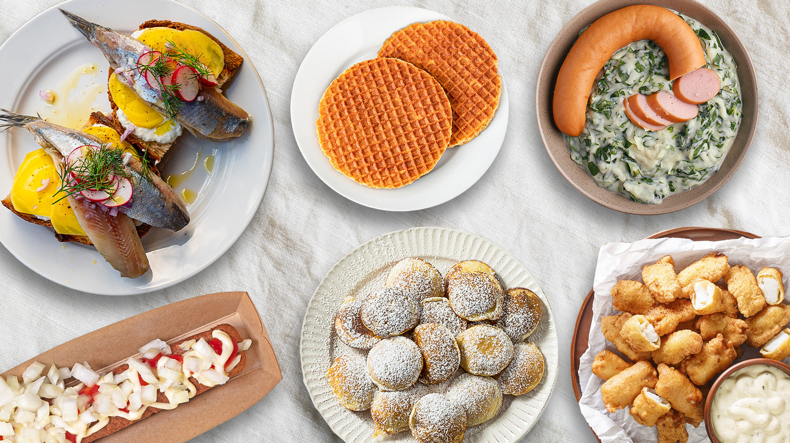
Hagelslag — Chocolate sprinkles eaten on buttered bread for breakfast. A Dutch staple that surprises every visitor.
Drop — Dutch liquorice, available in sweet or intensely salty varieties. The salty kind (zoute drop) is an acquired taste — but a true Dutch experience.
Patat (Frites) — Dutch-style thick-cut chips, typically served in a paper cone with a generous dollop of mayonnaise (friet met mayo). A must after a long day of sightseeing.
Pannenkoeken — Large, thin Dutch pancakes, savoury or sweet, served as a full meal. Try one topped with bacon and syrup for the full Dutch experience.
Stay Safe & Aware
The Netherlands is a safe and welcoming country, but a few important cautions will help ensure a smooth and responsible trip for everyone.
The Netherlands has dedicated cycle lanes on most pavements, often marked in red. Cyclists move fast and have right of way. Never walk in a cycle lane — this is the most common hazard for tourists. Always look both ways before crossing any lane.
Rotterdam city centre, Markthal, and busy tourist areas can attract pickpockets. Keep valuables in front pockets or a zipped bag. Avoid displaying expensive phones or cameras unnecessarily, especially in crowded spaces.
When boarding or alighting, be aware of other trams and cyclists. Always check both directions before stepping off a platform. Do not rush through closing doors — the next service is usually just minutes away.
Cannabis is tolerated only in licensed coffee shops in the Netherlands — it is not legal outside of these premises. Students are expected to behave professionally at all times as representatives of CityUHK. Any involvement with illegal substances is strictly prohibited.
The legal drinking age in the Netherlands is 18. Students under 18 cannot purchase alcohol. All students are reminded to drink responsibly and to be mindful of their conduct as representatives of the university at all times.
Rotterdam has many canals and waterways. Exercise caution near canal edges, particularly at night or after rain when surfaces may be slippery. Never lean over railings or stand on canal edges for photos.
May weather in the Netherlands can be unpredictable — mild temperatures (14–19°C) with sudden rain showers are common. Always carry a light waterproof jacket. Layering is recommended as temperatures can drop in the evenings.
112 is the universal emergency number in the Netherlands for police, fire, and ambulance. Non-emergency police: 0900-8844. Save these numbers in your phone before departure. Always inform the tour leader of any emergency immediately.
Hollandse Nieuwe is raw, cured fish. Students with seafood allergies, fish sensitivities, or compromised immune systems should avoid it. When in doubt, opt for the broodje haring (herring in a bun) from a reputable stall.
Bitterballen typically contain beef and gluten. They are not suitable for vegetarians, vegans, or those with gluten intolerance. Always check with the vendor if you have dietary restrictions. Many Dutch restaurants now offer vegetarian alternatives.
Dutch tap water is among the cleanest and safest in the world — no need to buy bottled water. Carry a reusable water bottle and refill it freely at the hotel or ask at any café. This also reduces plastic waste.
Dutch culture values punctuality highly. Always arrive on time — or slightly early — for all university visits and scheduled activities. Being late is considered disrespectful to hosts who have arranged programmes specifically for your group.
Always ask permission before photographing individuals. Inside university buildings, follow any posted photography guidelines. Avoid photographing people in sensitive or private situations. Be respectful of local customs when taking photos in public spaces.
On trains and in libraries or study spaces, observe designated quiet zones. Loud conversations on public transport are considered impolite in Dutch culture. Keep voices low and phones on silent when in academic or public settings.
During all university visits, students represent CityUHK and the Department of Social and Behavioural Sciences. Dress appropriately, engage actively with hosts, and maintain a professional and respectful attitude throughout all sessions and campus tours.